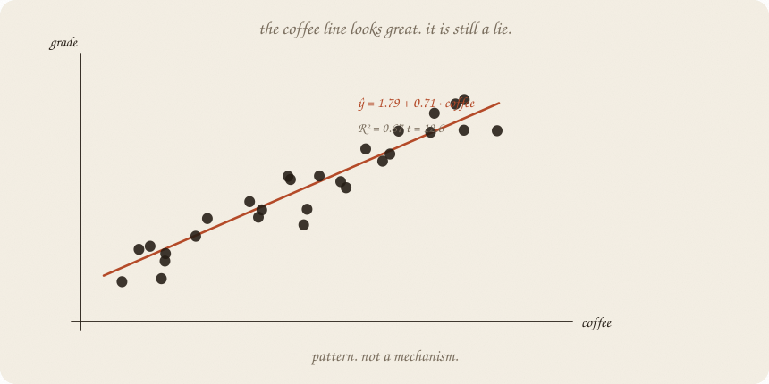
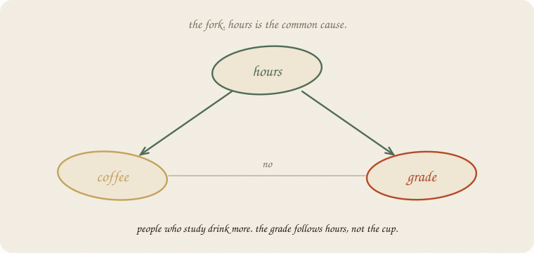
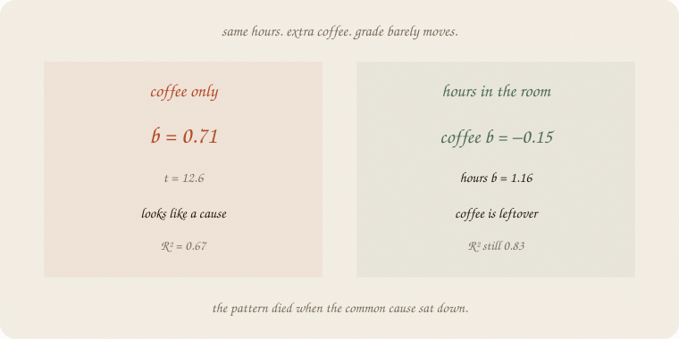
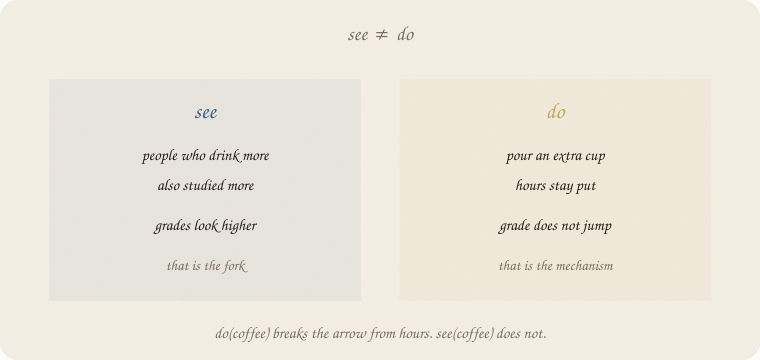
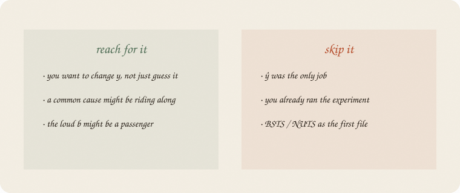

datazines · a sketchbook

Read 01 linear regression and 01 t-test first. Same exam world. Hours still make the grade. Coffee is back — as junk that rides with hours. The t-test can call coffee “real.” It cannot tell you coffee did it.
Flip it like a notebook. One page = one idea. Done.
Eighty students, house seed 7. A crowd, not the thirty on the ridge page. Grade is still 1.8 + 1 · hours, plus leftover. Coffee is not in that recipe. People who study just drink more.
Fit coffee only, anyway.
ŷ = 1.79 + 0.71 · coffee. R² = 0.67. t = 12.6.
The t-test shouts. The cloud rises. A campaign could print “drink coffee, raise your grade.”
That is a pattern. The line is honest about the cloud. It is silent about the tap.
Why do coffee and grade rise together? Because hours pushes both.

Hours → coffee (they drink while they study).
Hours → grade (the real lever).
Coffee → grade? No. We wrote the world that way.
People call this a fork. The common cause is a confounder. Coffee is a passenger. The passenger can look louder than the driver if you never seat the driver.
Correlation hours·coffee = 0.93. Of course coffee predicts the grade. It is a noisy copy of hours.
Put hours in the room. Coffee’s job is now: among people with the same hours, does extra coffee move the grade?

| model | coffee b | hours b | R² |
|---|---|---|---|
| coffee only | 0.71 | — | 0.67 |
| hours only | — | 0.99 | 0.83 |
| both | −0.15 | 1.16 | 0.83 |
Coffee’s slope dies. Hours stays near 1 — the number we planted. R² does not improve when coffee sits down. The extra cup was leftover.
This is not a new line. It is the old line, with the common cause held still. Lasso would fire coffee (03 lasso). Here we care why it should be fired.
See coffee: look at people who already drink more. They studied more. Grades look higher. The fork is intact.
Do coffee: pour an extra cup. Hours stay put. The grade does not jump. You broke the arrow from hours to coffee. That is the mechanism.

People write do(coffee) for that break. Ugly letters. Friendly job: what if we set the lever ourselves?
An experiment is do() in the world: random extra cups, hours free to be whatever they were. Then coffee’s b is a cause, or it isn’t. Seeing never did that job.
A t-test on the see-line still answers leftover. It does not answer do().
If you keep only one thing:
pattern ≠ mechanism. a loud b can be a passenger.
Eighty students, house seed 7 — enough that coffee-only looks loud and then dies when hours is in the room. Grade depends on hours only. Coffee rides with hours.
import numpy as np
from sklearn.linear_model import LinearRegression
rng = np.random.default_rng(7)
n = 80
hours = rng.uniform(1, 6, n)
coffee = 0.4 + 1.3 * hours + rng.normal(0, 0.8, n)
coffee = np.clip(coffee, 0, None)
grade = 1.8 + 1.0 * hours + rng.normal(0, 0.7, n)
print("corr hours·coffee", round(np.corrcoef(hours, coffee)[0, 1], 2))
print("corr coffee·grade", round(np.corrcoef(coffee, grade)[0, 1], 2))
print("corr hours·grade ", round(np.corrcoef(hours, grade)[0, 1], 2))
mc = LinearRegression().fit(coffee.reshape(-1, 1), grade)
mh = LinearRegression().fit(hours.reshape(-1, 1), grade)
mb = LinearRegression().fit(np.column_stack([hours, coffee]), grade)
print("coffee-only ŷ =", f"{mc.intercept_:.2f} + {mc.coef_[0]:.2f} · coffee",
" R²", round(mc.score(coffee.reshape(-1, 1), grade), 2))
print("hours-only ŷ =", f"{mh.intercept_:.2f} + {mh.coef_[0]:.2f} · hours",
" R²", round(mh.score(hours.reshape(-1, 1), grade), 2))
print("both hours", round(mb.coef_[0], 2), " coffee", round(mb.coef_[1], 2),
" R²", round(mb.score(np.column_stack([hours, coffee]), grade), 2))
corr hours·coffee 0.93
corr coffee·grade 0.82
corr hours·grade 0.91
coffee-only ŷ = 1.79 + 0.71 · coffee R² 0.67
hours-only ŷ = 1.78 + 0.99 · hours R² 0.83
both hours 1.16 coffee -0.15 R² 0.83
Coffee-only: 0.71 and a proud R². Hours-only: b ≈ 1, as planted. Both: coffee flips sign and dies; hours stays the driver; R² does not thank the cup. A t-test on the first line would have printed a tiny p. Tiny p, still a passenger.
| word | meaning |
|---|---|
| pattern | the cloud / the b you saw |
| mechanism | what y does if you do the lever |
| confounder | common cause sitting behind both |
| fork | hours → coffee and hours → grade |
| passenger | loud b, no arrow of its own |
| do(x) | set the lever; break the incoming arrows |
| hold still | put the confounder in the room |

Reach for it when you want to change y, not just guess it; a common cause might be riding along; the loud b might be a passenger.
Skip it when ŷ was the only job (01 linear regression); you already ran the experiment.
Pays you: the cause wing’s 01. A fork you can draw. See vs do. Why lasso firing coffee can be the right story, not only a haircut.
Costs you: holding hours still is not an experiment. A hidden fork remains hidden. p still only judges leftover. Causal impact without this sentence is a demo.
Cause wing, 01. Pattern ≠ mechanism. The gap on a series: 02 causal impact. Time furniture: 01 lag trend season. Chance sequel: 02 bootstrap.
Flip it like a notebook. One page = one idea.